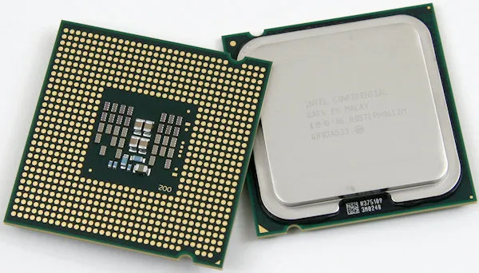
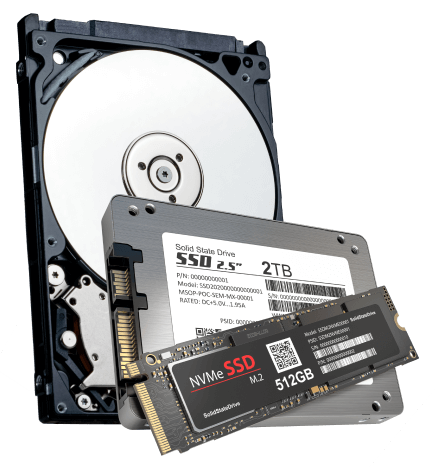
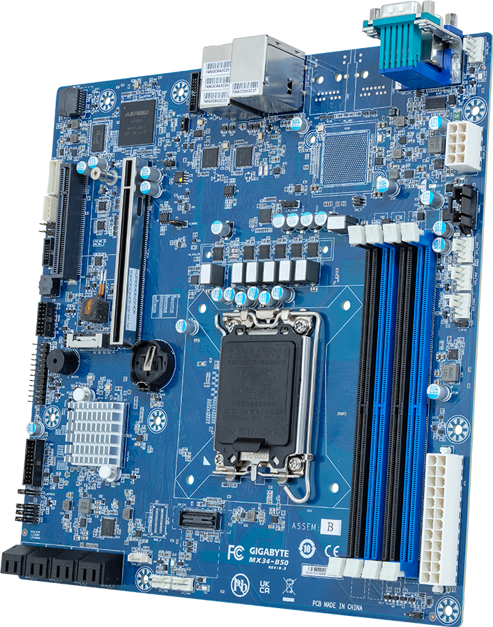
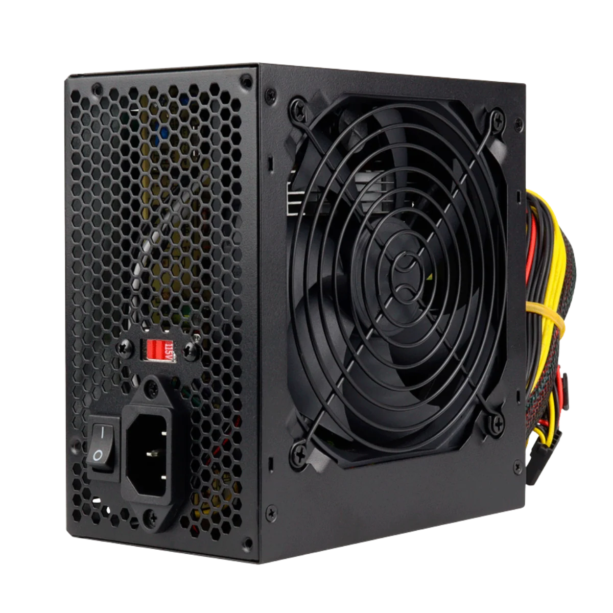
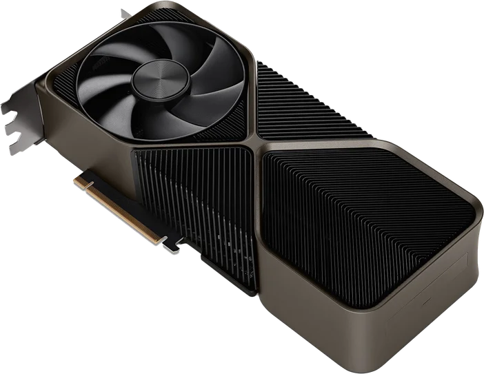

Espacio para imagen
1. Procesador (CPU)
Definición: Es considerado el cerebro de la computadora. Se encarga de interpretar las instrucciones de los programas y procesar todos los datos.
Función principal: Realiza cálculos lógicos, matemáticos y coordina el funcionamiento de los demás componentes del sistema. Las marcas más conocidas son Intel y AMD.
 Espacio para imagen
Espacio para imagen
2. Memoria RAM
Definición: Es la memoria de trabajo temporal del equipo.
Función principal: Almacena de forma rápida y momentánea los datos de los programas y aplicaciones que estás usando en el momento. A mayor cantidad de RAM, más aplicaciones puedes abrir simultáneamente sin que la computadora se vuelva lenta. Los datos se borran cuando apagas el equipo.

Espacio para imagen
3. Almacenamiento (HDD o SSD)
Definición: Es el componente encargado de guardar la información de forma permanente.
Función principal: Almacena el sistema operativo (como Windows o Linux), tus documentos, fotos, videos y juegos. Los discos SSD son mucho más rápidos que los antiguos HDD, lo que permite que la computadora encienda y cargue programas en pocos segundos.

Espacio para imagen
4. Tarjeta Madre
Definición: Es la placa de circuito impreso principal que sirve como columna vertebral de la computadora.
Función principal: Conecta y comunica físicamente al procesador, la memoria RAM, los discos de almacenamiento y las tarjetas de expansión entre sí, además de suministrarles energía eléctrica.

Espacio para imagen
5. Fuente de Poder
Definición: Es el dispositivo que transforma la corriente eléctrica alterna de la pared en corriente continua de menor voltaje.
Función principal: Alimenta de energía estable y segura a todos los componentes internos de la computadora para que puedan funcionar correctamente.

Espacio para imagen
6. Tarjeta Gráfica (GPU)
Definición: Es el componente dedicado al procesamiento de datos relacionados con el video, la imagen y los gráficos en pantalla.
Función principal: Permite renderizar imágenes complejas de alta calidad. Es fundamental para videojuegos, diseño gráfico profesional, edición de video y renderizado 3D. Puede venir integrada en el procesador o ser una tarjeta independiente (dedicada).